Notes from a weekend that got out of hand
I read a paper claiming you could reconstruct someone's dreams from a brain scanner and turn them into video. I wanted that to be real badly enough to go and check. This is what I found, what I built instead, and the result that made me stop and question the whole thing.
The paper is called Making Your Dreams A Reality. The pitch is exactly what it sounds like: put someone in an MRI scanner while they sleep, decode what they were dreaming, and assemble it into a video story. It went up in January 2025, marked as work in progress.
I went looking for the code. There is none. No data either. The links that would point to the supporting material point at material that was never published. As far as I can tell the paper has not been updated since.
So I read it properly instead, and this is the part that genuinely surprised me.
I had assumed the hard part was some special network trained on sleeping brains. There isn't one. The dream stage takes an existing model, already trained on people who were awake and looking at pictures, and simply runs it on sleep scans instead.
Nothing is retrained. No dream specific weights exist. The only thing the authors have that I do not is their own recordings of sleeping people.
That reframed the whole thing for me. There was no missing model to hunt down. The pipeline I would need for dreams is the same pipeline that works on waking eyes, and that pipeline is public.
Which meant the sensible first move was not to chase dreams at all. It was to get the ordinary version working end to end, on data where I could actually check the answer, because with a sleeping person there is nothing to check against except what they mumble when you wake them up.
So that is what this is. The boring first step, taken carefully.
The short version: it works better than I expected, it was slower than it should have been for a reason I could not see, and the most important thing I learned was not that the reconstruction is good. It is that the model has no way of telling you when it is making things up.
Let me start with the pictures, because that is what pulled me in.
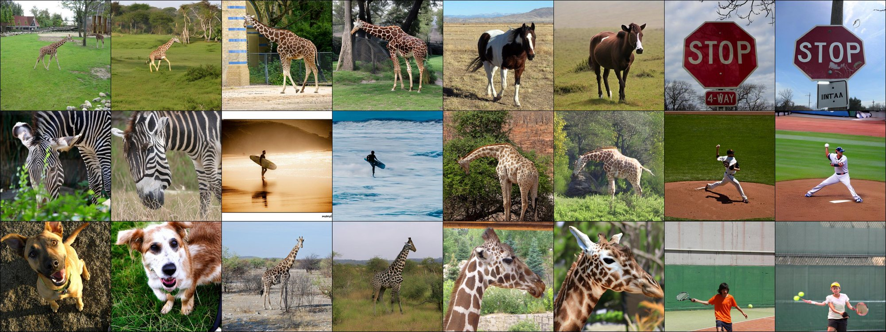
That is not a trick of selection. Those are the first twelve trials in the file, in order, with nothing thrown away.
The model is called NeuroPictor. It is published research with public weights, which is the only reason any of this was possible on my own machine. Two files came down:
| File | Size | What it is |
|---|---|---|
| checkpoint_120000.pth | 7.32 GB | a network trained to compress brain scans |
| epoch_015.pth | 7.93 GB | the part that turns those compressed scans into pictures |
Fifteen gigabytes sounds enormous, and it is, but a lot of the first file is training leftovers. Once loaded, the piece that actually reads brains is about 1.14 GB of numbers. I will come back to why that matters.
One thing worth being clear about, because it shapes everything else: the model is
tuned to one specific person. The file path literally says sub01. It
learned one individual's brain. Brains differ enough that this is a real limit, not a footnote.
My first run was painfully slow. Each step of image generation took about 7.5 seconds, and each picture needs fifty steps. That is six minutes per image. Something was clearly wrong, because this card should chew through that.
My first guess was the obvious one. Part of the model must be running on the processor instead of the graphics card. That is the classic cause, it happens constantly, and it is easy to check.
So I checked. Every single piece was on the graphics card. Not one stray number anywhere else. I counted them.
I also ran the standard tool for watching a graphics card, nvidia-smi, while
it was crawling. It reported 7945 MB of 8188 MB in use and 100% utilisation.
That reads as a perfectly healthy, perfectly busy card. It is exactly what a fast run looks like. The tool cannot see this problem at all.
Here is what was really going on. The model's numbers, at full precision, take 7.38 GB. My card has 8.00 GB. So before generating a single pixel, the card was 92% full.
Then image generation does something that doubles the working space, and the real peak demand came to 10.46 GB. More than the card physically has.
On Windows the graphics driver does not complain when you overrun. It quietly spills the excess into ordinary system memory and keeps going. Every single step then has to drag those numbers back across the slow connection between the card and the rest of the computer. The card really is 100% busy. It is busy waiting.
The fix was one line: store the numbers at half precision. Same model, half the space.
| Full precision | Half precision | |
|---|---|---|
| Space the model needs | 7.38 GB | 3.69 GB |
| Peak demand | 10.46 GB | 4.61 GB |
| Time per step | 7.46 s | 0.18 s |
About forty times faster. Twelve images went from over an hour to one minute fifty four seconds. The pictures look the same. Nothing was lost except the waiting.
The lesson I actually took from this: the tool everyone reaches for to diagnose a slow graphics card is blind to one of the most common ways a graphics card gets slow. The number that would have told me immediately is how much memory the program asked for, not how much the card reports using. Those are different questions.
I had a mental picture of feeding in something that looks like a brain. A slice, a scan, the thing you see in a hospital. That is not what happens at all.
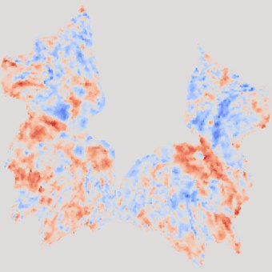
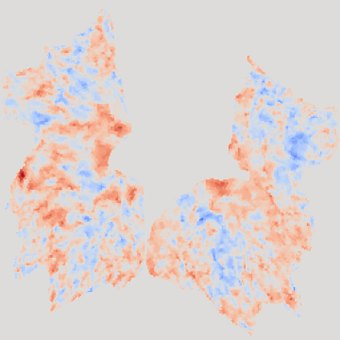
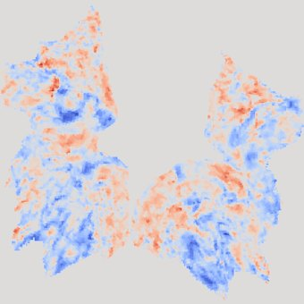
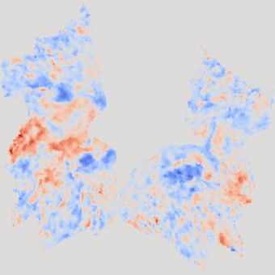
The outer layer of your brain is a crumpled sheet. If you take that sheet and flatten it out, like peeling an orange in one piece and pressing it down, you get a two dimensional map. These are the two halves of that map, cropped down to the visual part at the back of the head. People call the shape a butterfly and once you see it you cannot unsee it.
By the time it reaches the model it is a 256 x 256 grid of numbers.
52.5% of it is exactly zero, because that is everything outside the visual
region, masked out. The rest are scores saying how far above or below normal that spot was,
running roughly between minus 2.4 and plus 2.5.
Getting from a raw scanner file to this involves hours of processing with specialist neuroimaging software. The data I used was already through that pipeline. This turns out to be the single biggest practical obstacle to trying this on any new brain data, and I will come back to it at the end.
This was the part I most wanted to understand, and my first mental model of it was wrong in a way that is worth spelling out.
I assumed it worked like a translator: brain goes in one end, picture comes out the other, the way a compression program turns a file into an image. Encoder, then decoder.
It does not work like that at all, and the difference is the whole trick.
Here is what actually happens, in plain steps.
The flattened cortex map goes into a network that boils it down. What comes out the other side is not a small picture. It is a set of numbers that means something closer to a description: this scan has these characteristics, this much of this kind of activity, arranged this way.
Think of it like someone watching a film and writing notes, rather than someone making a smaller copy of the film. The notes are not a film. You cannot watch them. But if you handed them to a good enough artist, they could paint the scene.
Concretely, if you like numbers: a 256 by 256 grid of brain activity goes in, and 77 rows of 1024 numbers come out. Those 78,848 numbers are the notes. Everything after this point is working from them and never looks at the brain again.
This is the part that broke my mental model. Nobody ever converts the brain summary into an image.
Instead the system starts with a rectangle of pure random static, the kind of noise an untuned television used to show. Then it cleans it up, slightly, fifty times over. Each pass removes a little randomness and commits a little more to being a real scene. Fifty passes later there is a photograph where the static used to be.
The brain summary never becomes the picture. It sits beside the process and votes, at every one of those fifty passes, on which way the cleanup should go. Nudging it toward a giraffe and away from everything else, over and over, until a giraffe is what is left.
If that sounds familiar, it should. It is exactly how the image generators everyone has been using for the last few years work. Normally the thing doing the voting is a sentence you typed. Here it is somebody's visual cortex. Same machine, different hand on the wheel.
The summary does not steer through a single channel. It splits into two, and this is why the results are as good as they are.
One channel carries roughly what is in the scene. There is a giraffe here. The other carries roughly how the scene is arranged. The tall thing is left of centre, the ground is bright, the background falls away.
You need both, and it is easy to see why once you imagine having only one. Meaning without layout gives you a giraffe, but floating in some generic giraffe setting that has nothing to do with what the person saw. Layout without meaning gives you a picture with the right shapes in the right places and no idea what any of them are, a giraffe-shaped smudge in a field-shaped smudge.
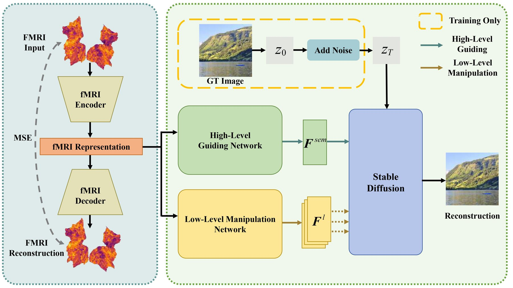
Notice the fMRI Decoder in the bottom left of that diagram. That is the half I mentioned getting deleted. It exists so the system can be trained: you can check whether the summary is any good by seeing if you can rebuild the original scan from it. Once training is over, nobody wants scans back, so it is dropped and only the encoder is kept.
The important move is in the middle. The image is not extracted from the brain data. It is grown from random noise, and the brain data is used at every step to steer which direction the noise gets cleaned up in.
That is what an image generator does normally, except normally the steering comes from a sentence you typed. Here the steering comes from a brain. Same machine, different steering wheel.
And the steering happens on two channels at once, which is why the results are as good as they are. One channel carries meaning, roughly "there is a giraffe in this". The other carries layout, roughly "and the tall thing is over on the left". Meaning alone would give you a giraffe in the wrong place. Layout alone would give you a giraffe shaped smudge.
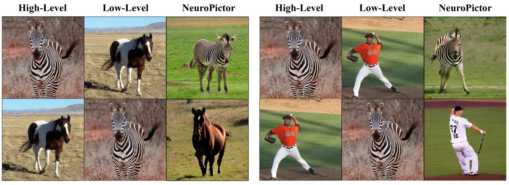
So "there is a zebra in this" and "the animal is standing side on in the middle of a field" really are carried on different wires, and you can cross them.
Here is the detail that finally made it click for me. That 7.32 GB file I downloaded contains a full system for compressing brain scans and reconstructing them. When the code loads it, it immediately deletes the reconstructing half. It is thrown away on purpose. Nobody wants the brain scan back. They only want the summary in the middle, because that summary is what steers the picture. That is why 7.32 GB collapses to 1.14 GB once loaded.
Once the pictures existed I wanted labels for them, so I had Gemini look at each decoded picture and describe it. Worth stressing: it only ever saw the reconstruction. It never saw the original photograph.
The order it described them in came out matching the true order of the photographs, all twelve. I did not plan that as a test, but it is one.
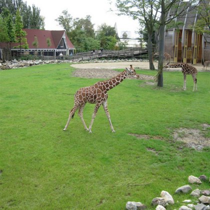
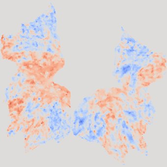
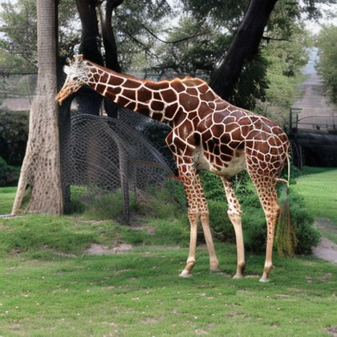
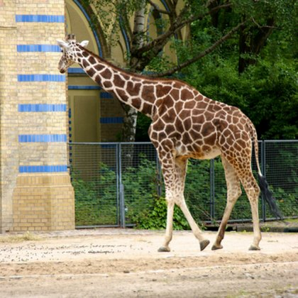
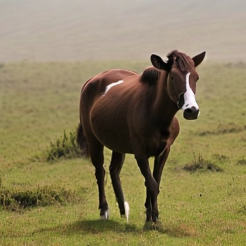
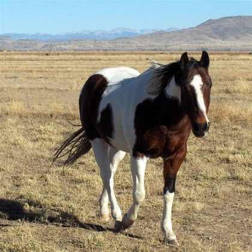
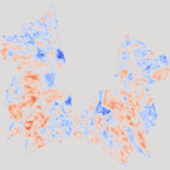
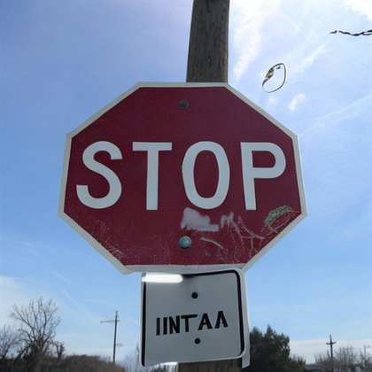
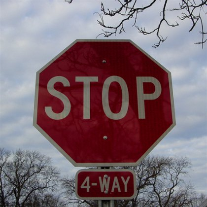
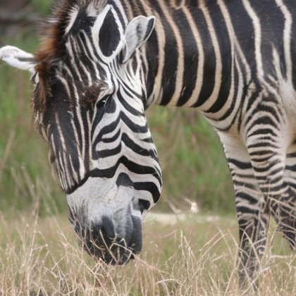
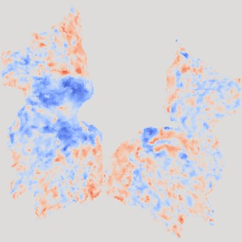
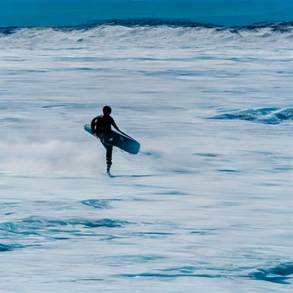
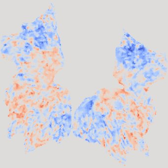
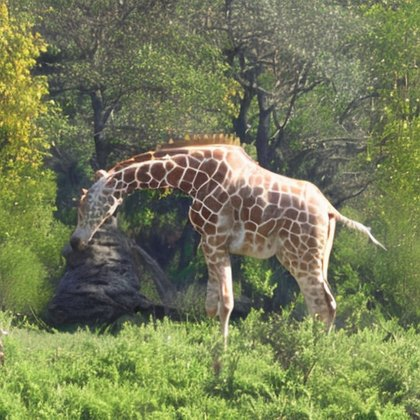
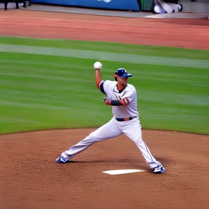
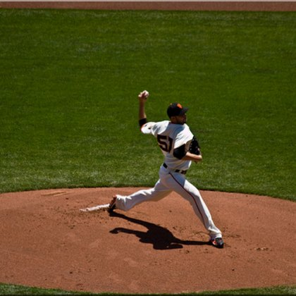
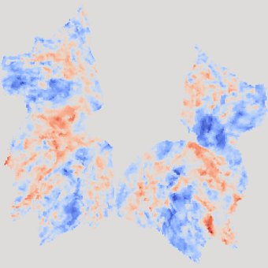
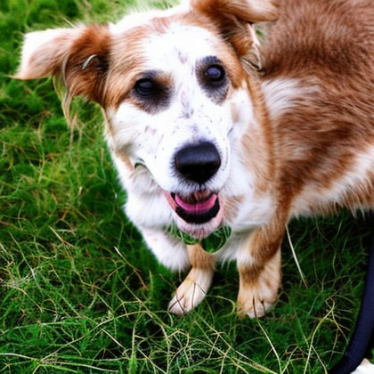
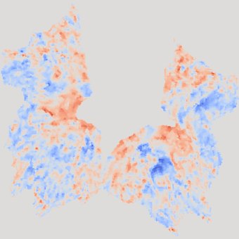
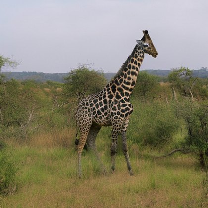
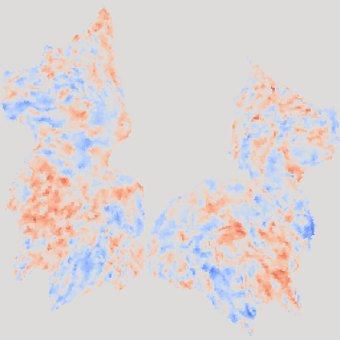
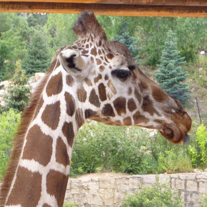
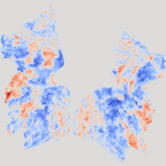
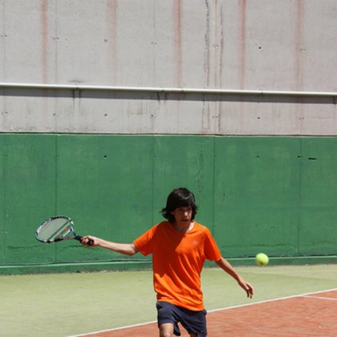
Left to right in each group: the flattened brain scan, the picture decoded from it, and the photograph the person was actually looking at. The caption underneath is what Gemini said about the middle image alone.
Twelve still pictures is a nice result but a strange artifact. The obvious next thought was to make it continuous. Not a slideshow, an actual moving world you could fall into.
There is a class of model for this now, called a world model. You give it a starting image and a description, and it generates video continuously, reacting to instructions while it runs. I used one called Helios through a service called Reactor.
The idea: feed each decoded brain image in as a steering signal, one after another, in a single unbroken session. The world never restarts, so lighting and camera and scene carry across each change instead of cutting.
To bridge between images I had Gemini write transitions. Not descriptions of each scene, which would be useless, but descriptions of the change. So instead of "a stop sign", it writes:
"The horse's vertical white blaze expands and hardens into an octagonal metal face, while its chestnut legs meld into a frosty wooden pole under a suddenly blue sky."
That is the difference between a cut and a morph, and it is the whole reason the video holds together.
Neither of these is deep, but both are the kind of thing nobody writes down, so here they are.
The first model I picked could not do the job. I chose it from its description, which promised image based steering. When I actually asked the service what commands it accepts, it had five, and not one of them took an image. Its own documentation said the video does not even travel through the service you connect to. I had built against a thing that did not exist. Reading the machine readable list of commands took thirty seconds and would have saved the whole detour.
The second model was simply broken. It connected, reported itself ready, then died about twenty four seconds later, every time, four times running. I proved it was not me by connecting to two other models on the same service from the same laptop, both of which held a connection happily for over a minute. That comparison is the only reason I stopped debugging my own code.
Helios, the one I ended up with, turned out to be better anyway, because it lets you replace the steering image while it is generating. That is what makes all twelve brain images drive the video rather than just the first one.
My first video was twenty five seconds with twelve scenes, so I switched scenes every 2.08 seconds on a timer. It looked mushy and the last scene never appeared at all.
The model does not generate video smoothly. It generates in blocks, and a block takes about 2.06 seconds. An instruction can only take effect at a block boundary.
So my scenes were 2.08 seconds and the blocks were 2.06 seconds. Every scene got roughly one block, which is not enough to actually render a transformation, and the small mismatch meant the changes slid further out of step as it went. The final scene ran out of video before it ever got a block.
The fix was to stop using a timer. The model announces every time it finishes a block, so I waited for those announcements and changed scene every second one. Now each scene gets two full blocks and nothing drifts, because I am no longer guessing at a clock I cannot see.
The model also reports which instruction drove each block, so afterwards I could check rather than assume. Twenty four blocks, two per scene, all twelve scenes present.
Somewhere in here I realised I had no way of knowing whether any of it was real.
Think about what the generator does. It takes a 256 by 256 grid of numbers and grows a photograph out of noise, steered by those numbers. Nothing in that process can refuse. There is no state it can enter where it says "this input is meaningless". Feed it anything at all and it will hand you a confident, sharp, plausible photograph.
Which means a beautiful reconstruction, on its own, proves nothing whatsoever. I could have been looking at the model's imagination the entire time.
So I tested it. I made two fake inputs designed to be statistically identical to real brain scans, with the one thing missing being the information:
Then I ran them through the identical pipeline and looked.
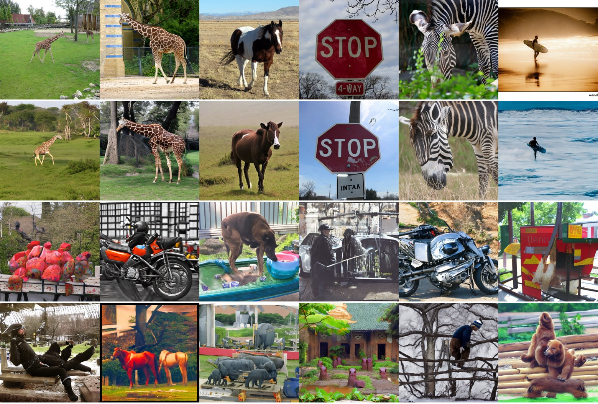
A man sitting on a bench. Red horses. Elephants in a factory yard. Bears on logs. Every one of them a convincing photograph. Every one of them invented.
That is the thing I would want anyone to take away from this. Not the giraffes. This.
To put a number on it, I measured how similar each decoded picture was to the photograph the person actually saw, using a standard image comparison model so my own judgement stayed out of it. Higher means more similar.
The chance floor is the row that matters most. That is real decoded pictures scored against the wrong photographs. It answers the sneaky objection: maybe the model just always draws animals in fields, and any animal picture will score well against any other.
Real pictures beat that floor by 0.311. So the reconstructions carry information about which particular photograph produced them, not just a general fondness for wildlife.
And scrambled scoring the same as pure noise tells you something specific about how the model reads brains. If position did not matter, scrambling would be harmless. Scrambling destroys it completely. The model is reading where in the cortex the activity is, not just how much there is.
I want to be careful here, because this is the exact point where writeups usually get carried away, mine included if I am not watching.
| Claim | Status |
|---|---|
| You can reconstruct roughly what someone is looking at from their visual cortex | Established by the original research. I only reproduced it. |
| These particular reconstructions carry image specific information | Measured here. 0.761 against a 0.450 floor, twelve trials. |
| The decoder reads spatial pattern, not overall activity level | Supported. Scrambling the same values destroys the result. |
| Decoded pictures can steer a world model into a coherent take | Shown, but "coherent" is my eyes, not a measurement. |
| This would work on you | No evidence at all. One subject, tuned to that subject. |
| This reads dreams, thoughts, or anything private | No. See below. |
On that last one, since it is where everybody's mind goes. This person was awake and looking at photographs. Reading imagery from sleep is a real research area and a much harder problem, and none of what I did here touches it.
There are three more limits worth stating plainly. Twelve trials is a demonstration, not an effect size. The decoder is someone else's published work and I did not train anything. And everything in the video between the decoded frames is invention: only twelve moments are anchored to a brain, the rest is the world model dreaming between them.
I had never thought about the practical side of this and it turns out to be the most human part of the whole field.
You cannot tell from a brain scan alone whether somebody is dreaming, or when. So the 2013 study wired people up for EEG at the same time as the MRI. EEG reads electrical activity through the scalp, and it is what sleep researchers use to tell which stage of sleep somebody is in. The scanner watches the blood flow, the electrodes watch the brain waves, both at once.
Then they waited. When the EEG showed the particular signature of someone dropping into sleep, they woke them up and asked what they had just been seeing. The person described it out loud, went back to sleep, and it happened again. And again.
They did this at least 200 times per person, for two people. Picture being woken two hundred times to be asked what you were just dreaming about. That is the dataset.
A half-asleep verbal report is not something you can score a model against. So the reports were broken into the words describing visible things, and each of those was matched to an entry in a dictionary of concepts. Only concepts that came up in at least ten reports were kept, which left 26 for the first subject and 16 for the second.
That is why I said the labels are single words. The ground truth for a given awakening is not a sentence. It is a checklist: was there a car in this one, was there a person, was there a building.
This is the bet the whole field rests on, and it deserves stating plainly, because it is not obvious.
The decoder I ran learned from someone looking at photographs. A dream involves no photograph and no light entering the eye. So why would the same decoder read anything at all from a sleeping brain?
The claim is that your visual cortex does not care much where the picture came from. Seeing a car and vividly imagining a car light up overlapping patterns, because in both cases your brain is representing "car". If that holds, a decoder that learned to read those patterns from perception can read them from imagination too.
The 2013 study found real support for this, with an important catch. Decoders built on the higher visual areas, the ones that deal in objects and categories, predicted dream content well. Decoders built on the lower visual areas, the ones dealing in edges, orientations and raw texture, did much worse.
This is my reasoning rather than anything the study says, but it follows fairly directly and it changed what I would expect.
Remember the two channels: one carrying what is in the scene, one carrying how it is arranged. Those map roughly onto higher and lower visual areas. And it is the lower areas that go quiet in dreams.
So a dream reconstruction through this pipeline would probably get the subject roughly right and the composition mostly wrong. Recognisably a car, in a place and a pose that owes more to the generator's imagination than to the dreamer's. Half the steering wheel, working.
Having got the waking version working, the dream version is in principle just a matter of different input. Same model, same pipeline, sleep scans instead of waking ones. That is the whole trick the paper describes.
Two things stand in the way, and neither is the modelling.
The data has gone missing. The best known public sleep imaging dataset is from a 2013 study, and it is cited everywhere as openly available. Every paper and code repository points at the same download link. That link now returns a 404, and the site that hosted it serves a default web server placeholder page. The whole archive appears to be gone. The data may survive somewhere. It is not where anybody says it is.
And dreams are not what I pictured. That 2013 study did not catch people in deep, cinematic REM dreams. It woke them in the first minutes of falling asleep, when you get those short drifting fragments rather than stories. The labels are not descriptions either. They are single words, closer to "was there a car in it" than "I was skiing down a mountain".
So even done perfectly, the honest output would be a handful of disconnected fragments, not a dream you could sit and watch. Worth knowing before falling in love with the idea, which I had already done.
There is one more thing worth saying about the original paper. Its actual quantitative result rests on three clean dream instances, and of the three reported significance values, one does not clear the usual bar. That is not a criticism of the authors, who are working with genuinely scarce data. It is a caution about how much weight the headline can carry. The bottleneck in this field is not scanners or models. It is that people mostly do not remember their dreams.
Suppose the sleep data turned up tomorrow, in full. There is still a wall in the way, and it is not the modelling.
The input to all of this is not just "a brain scan". It is a flattened cortical surface, cropped to one specific region, laid out in a coordinate system built from a standard human brain template. A raw scanner file looks nothing like it.
Getting new data into that form needs specialist neuroimaging software and, by the documentation's own estimate, potentially a day or two of processing per subject. That is the real wall, not the modelling.
If I pick this up again, the first thing I will build is not a bigger pipeline. It is the noise test, run first, before anything else. Because on this kind of model, until you know what nothing looks like, you cannot tell whether you are looking at something.